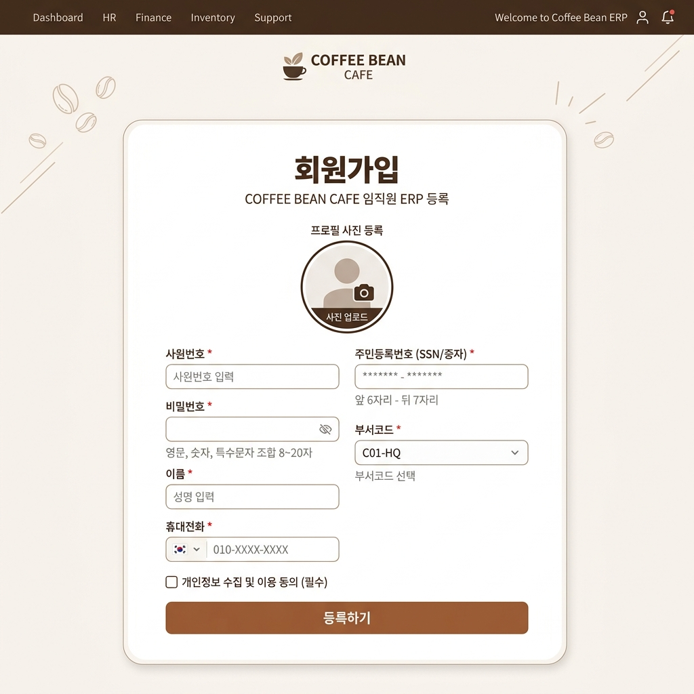
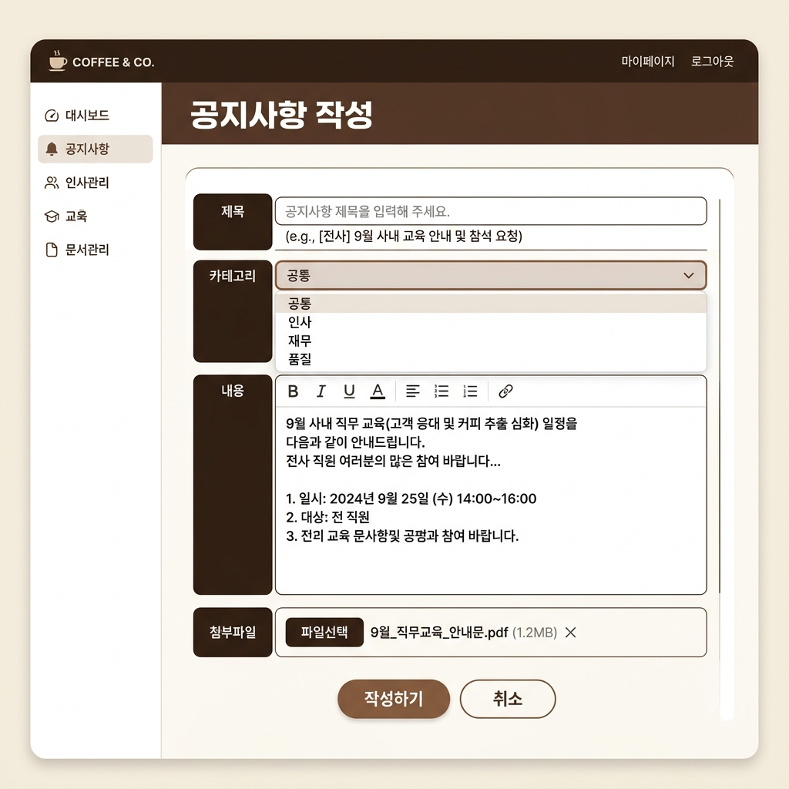
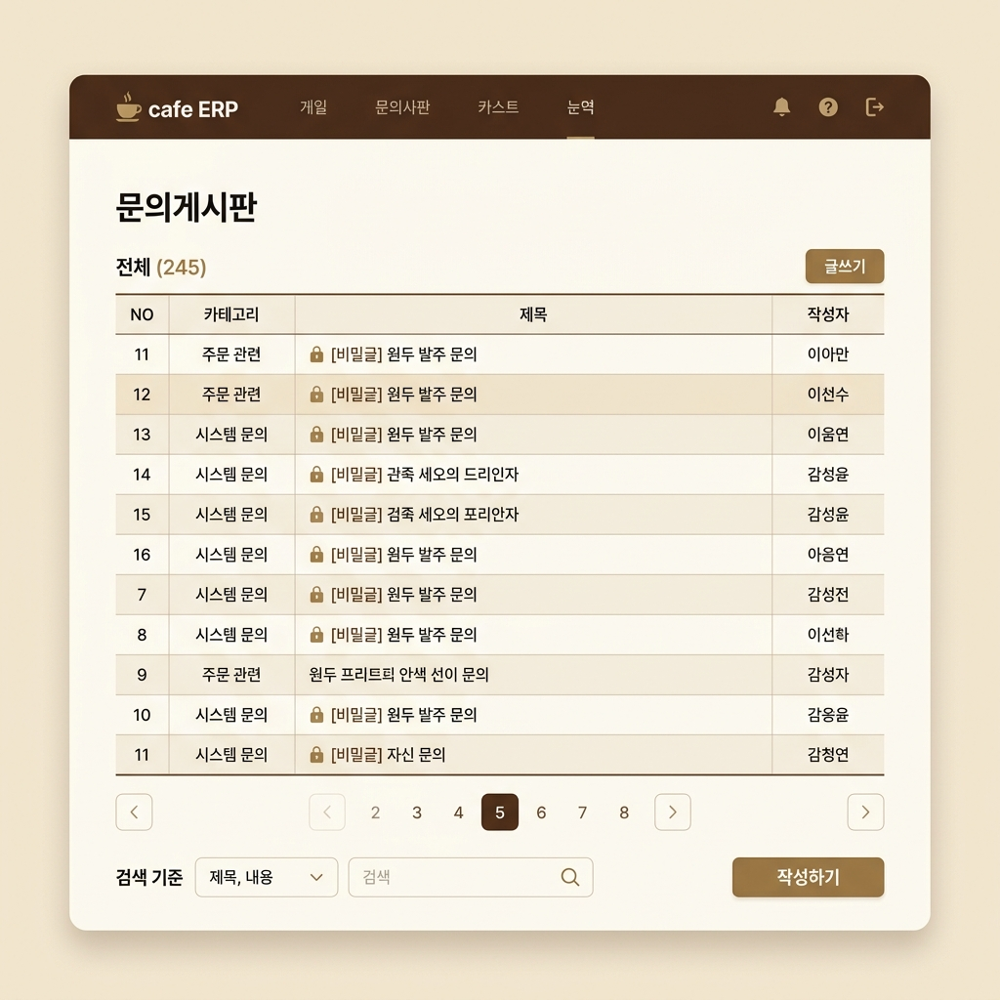

사내 카페 ERP 시스템 '커피프린스'
사내 카페 운영 효율성을 극대화하기 위해 인적자원(HR), 재무(Finance), 재고(Stock), 결재(Approval) 시스템을 통합한 웹 ERP 솔루션입니다.
프로젝트 개요
기획 배경 및 목적
사내 임직원들이 이용하는 전용 카페의 운영 관리 문제를 해결하기 위해 고안되었습니다. 프랜차이즈 및 대형 매장에서 요구되는 인사 정보, 근무조 편성(근태), 급여 대장 생성, 본사 재고 입출고 및 가맹점 발주, 매장 일일 매출 관리, 품목 기안 결재를 통합적으로 처리하는 ERP 시스템이 부재함을 인지하고, 이를 웹 기반 환경에서 안전하게 상호 유기적으로 통제하도록 기획되었습니다.
내가 담당한 핵심 기능 (김민성)
계정 생성및 정보 수정과 사내 커뮤니케이션 인프라를 전담 구축하였습니다.
계정 관리
Multi-part File을 활용한 실시간 프로필 이미지 갱신 프로세스 및 AJAX 기반 정보 수정 API, 세션 관리 체계를 설계했습니다.
권한별 공지사항 작성
경영혁신실(종합 권한) 및 각 개별부서(인사, 재무, 품질)의 소속 부서별 작성 권한 검증 미들웨어 필터 및 TOP 공지사항 고정 쿼리를 설계했습니다.
사내 문의 및 답변(Q&A)
비공개 비밀 질문 지원 로직(본인 및 관리자만 열람), 질문-답변-댓글로 연결되는 결합 파이프라인의 트랜잭션을 구현했습니다.
기술 스택 & 개발 환경
Operating System
Languages
Framework & Library
Database
WAS
Collaboration & Design
사원 정보 및 인증 관리

회원가입 및 세션 관리
사내 ERP 시스템인 만큼 사번(아이디)과 주민번호, 부서코드, 직급코드를 연계한 사원 회원가입을 처리합니다. 가입 시 프로필 이미지를 서버 내 디스크에 고유 이름으로 저장하며, 비동기 AJAX 통신을 이용하여 사용자 인터페이스 반응성을 극대화하였습니다.
프로필 이미지 실시간 프리뷰
HTML5 FileReader API를 활용하여 사용자가 프로필 파일을 선택하는 즉시 화면에 둥근 프로필 미리보기 창을 노출합니다.
bCryptPasswordEncoder 암호화
보안성 극대화를 위해 Spring Security의 `BCryptPasswordEncoder` 단방향 해시 암호화를 적용했습니다. 가입 시 전달받은 원본 비밀번호를 해시 토큰으로 변환한 뒤 데이터베이스에 안전하게 보관하여 사원 계정을 보호합니다.
FormData 기반 비동기 가입 (AJAX)
텍스트 필드와 파일 데이터를 `FormData` 객체로 병합하여 비동기 `fetch` POST로 서버에 전달하며, 가입 완료 시 화면 새로고침 없이 홈 화면으로 전환됩니다.
@Transactional
public int join(MemberVo vo , MultipartFile profile) throws IOException {
// 1. 유효성 검사 (비밀번호 규칙 등 검증)
checkValidation(vo);
// 2. 프로필 이미지 디스크 업로드 및 파일 정보 갱신
if( profile != null && !profile.isEmpty()){
String changeName = FileUploader.upload(profile, filePath);
vo.setProfileChangeName(changeName);
vo.setProfileOriginName(profile.getOriginalFilename());
}
// 3. 비밀번호 암호화 (BCrypt)
String encodedPw = bCryptPasswordEncoder.encode(vo.getEmpPw());
vo.setEmpPw(encodedPw);
// 4. MyBatis 매퍼 호출을 통한 DB Insert 실행
return memberMapper.join(vo);
}async function join() {
// 1. 값 추출 (클래스 내부의 요소를 정확히 지칭)
const empNo = document.querySelector("input[name=empNo]").value;
const empPhone = document.querySelector("input[name=empPhone]").value;
const empPw = document.querySelector("input[name=empPw]").value;
const deptCode = document.querySelector("input[name=deptCode]").value;
const empName = document.querySelector("input[name=empName]").value;
const resdNo1 = document.querySelector("input[name=resdNo1]").value;
const resdNo2 = document.querySelector("input[name=resdNo2]").value;
const posCode = document.querySelector("input[name=posCode]").value;
const empEmail = document.querySelector("input[name=empEmail]").value;
const empAddress = document.querySelector("input[name=empAddress]").value;
const profile = document.querySelector("input[name=profile]").files[0];
// 필수값 간단 체크
if(!empNo || !empPw || !resdNo1 || !resdNo2) {
alert("필수 항목을 모두 입력해주세요.");
return;
}
// 2. 주민번호 합치기 (13자리 숫자만)
const fullResdNo = resdNo1 + resdNo2;
// 3. FormData 객체 생성
const fd = new FormData();
fd.append("empNo", empNo);
fd.append("empPhone", empPhone);
fd.append("empPw", empPw);
fd.append("deptCode", deptCode);
fd.append("resdNo", fullResdNo);
fd.append("empName", empName);
fd.append("posCode", posCode);
fd.append("empEmail", empEmail);
fd.append("empAddress", empAddress);
if (profile) {
fd.append("profile", profile);
}
// 4. 서버 전송
try {
const resp = await fetch("/member/join", {
method: "post",
body: fd
});
if (!resp.ok) {
throw new Error("네트워크 응답 에러");
}
const data = await resp.json();
if (data.x === "1") {
alert("회원가입 성공!");
location.href = "/"; // 메인 화면으로 이동
} else {
alert("회원가입 실패: 관리자에게 문의하세요.");
}
} catch (error) {
console.error("Error:", error);
alert("회원가입 중 오류가 발생했습니다.");
}
}부서별 권한 기반 전사 공지사항 게시판

전사적 부서 권한 검증 및 TOP 공지 조회
사내 정보 공유의 정확성을 위해 부서 코드 기반의 글쓰기 권한 검증 장치를 추가하고, 높은 빈도로 조회되는 게시글을 최상단에 고정하는 리스트 쿼리를 설계했습니다.
클라이언트 사이드 JSTL 분기 처리
`insert.jsp` 작성 폼 구성 시 로그인 사원의 부서 코드(`deptCode`)를 JSTL 태그 라이브러리로 분기 검증하여, 소속 부서 카테고리(예: 인사부서는 '인사' 카테고리만) 또는 '공통' 카테고리만 드롭다운에 노출되도록 제어했습니다. 마스터 권한의 '경영혁신실(310100)'은 모든 카테고리를 선택할 수 있습니다.
미들웨어 레벨 부서 권한 제어 (서버사이드)
UI 단의 조작 우회를 방지하기 위해 NoticeRestController 단에서 로그인 유저의 부서와 작성 카테고리가 일치하는지 한 번 더 검증하고, 비인가 접근 시 `403 Forbidden` 상태코드와 경고 메세지를 반환합니다.
ROWNUM & UNION ALL 기반 하이브리드 리스트
Oracle DB의 ROWNUM 제한 조건과 UNION ALL을 결합하여 조회수가 높은 TOP 3 공지를 목록 맨 위에 배치하고, 그 아래 일반 공지 목록을 정렬 및 페이징 (`OFFSET ... ROWS FETCH NEXT`) 하도록 쿼리를 최적화했습니다.
// NoticeRestController.java - 부서별 작성 권한 검증 세그먼트
MemberVo loginMemberVo = (MemberVo) session.getAttribute("loginMemberVo");
if(loginMemberVo == null) throw new IllegalStateException("login required");
// 로그인 유저의 부서코드와 전송된 카테고리를 기준으로 기안 권한 검증
String userDept = loginMemberVo.getDeptCode(); // 사원 부서 코드
String category = vo.getCategory(); // 작성 카테고리 ("인사", "재무", "품질" 등)
boolean isAuthorized = false;
if ("310100".equals(userDept)) {
isAuthorized = true; // 경영혁신실은 전 부서 카테고리 기안 가능 (마스터 권한)
} else {
if ("공통".equals(category)) {
isAuthorized = true; // 일반 부서도 공통 공지는 작성 가능
} else if ("인사".equals(category) && "310101".equals(userDept)) {
isAuthorized = true; // 인사부(310101)는 '인사' 카테고리 허용
} else if ("재무".equals(category) && "310102".equals(userDept)) {
isAuthorized = true; // 재무부(310102)는 '재무' 카테고리 허용
} else if ("품질".equals(category) && "310103".equals(userDept)) {
isAuthorized = true; // 품질부(310103)는 '품질' 카테고리 허용
}
}
if (!isAuthorized) {
log.warn("권한 없는 공지 작성 시도: 부서={}, 카테고리={}", userDept, category);
Map<String, String> errorMap = new HashMap<>();
errorMap.put("result", "0");
errorMap.put("msg", "해당 카테고리의 공지사항을 작성할 권한이 없습니다.");
return ResponseEntity.status(403).body(errorMap); // 403 Forbidden 반환
}@Select("""
<script>
SELECT * FROM (
/* 1. 조회수 상위 3개 추출 (TOP 공지) */
SELECT * FROM (
SELECT
N.NOTICE_NO, N.WRITER_NO, M.EMP_NAME AS WRITER_NAME, N.TITLE, N.CONTENT,
N.HIT, N.CREATED_AT, N.UPDATED_AT, N.DEL_YN, N.CATEGORY,
'Y' AS IS_TOP
FROM NOTICE N
JOIN MEMBER M ON (N.WRITER_NO = M.EMP_NO)
WHERE N.DEL_YN = 'N'
ORDER BY N.HIT DESC
) WHERE ROWNUM <= 3
UNION ALL
/* 2. 일반 리스트 (페이징 및 검색 적용) */
SELECT
N.NOTICE_NO, N.WRITER_NO, M.EMP_NAME AS WRITER_NAME, N.TITLE, N.CONTENT,
N.HIT, N.CREATED_AT, N.UPDATED_AT, N.DEL_YN, N.CATEGORY,
'N' AS IS_TOP
FROM NOTICE N
JOIN MEMBER M ON (N.WRITER_NO = M.EMP_NO)
WHERE N.DEL_YN = 'N'
<if test="searchValue != null and searchValue != ''">
<choose>
<when test="searchType == 'title'">
AND N.TITLE LIKE '%' || #{searchValue} || '%'
</when>
<when test="searchType == 'writer'">
AND M.EMP_NAME LIKE '%' || #{searchValue} || '%'
</when>
</choose>
</if>
)
ORDER BY IS_TOP DESC, NOTICE_NO DESC -- 합쳐진 결과 전체를 정렬
OFFSET #{pvo.offset} ROWS FETCH NEXT #{pvo.boardLimit} ROWS ONLY
</script>
""")
List<NoticeVo> selectList(@Param("pvo") PageVo pvo,
@Param("searchType") String searchType,
@Param("searchValue") String searchValue);사내 문의 및 답변(Q&A) 시스템

사내 소통 피드백 시스템 및 데이터 정합성
사원들의 시스템 버그 리포트나 개인 고충 처리를 위해 1:1 비공개 Q&A 채널을 마련하고, 공지 및 문의 게시판에 대한 파일 업로드/교체 파이프라인의 데이터 정합성을 확보했습니다.
비밀 문의글 잠금(Secret Mode)
민감한 내용을 문의할 시 비밀글 설정을 통해 작성 사원 본인 및 총괄 관리자 부서원만 열람을 허용하여 사생활을 보호합니다.
파일 교체 트랜잭션 동기화
게시글 수정 시 기존 업로드 파일을 로컬 서버 디스크에서 실시간 물리적으로 안전하게 삭제 처리하고, DB 레코드를 교환하며 새 파일 바인딩을 진행하는 트랜잭션 파이프라인을 구축했습니다.
답변 완료 시 게시글 상태 자동 갱신
운영 효율성을 높이기 위해 관리자가 답변 등록을 완료함과 동시에, 해당 게시글의 상태 플래그가 '답변 완료'로 실시간 자동 업데이트되도록 백엔드 비즈니스 로직을 구현하였습니다.
@Select("""
<script>
SELECT
Q.INQUIRY_NO
,Q.WRITER_NO
,M.EMP_NAME AS WRITER_NAME
,Q.TITLE
,Q.CONTENT
,Q.TYPE_CODE
,Q.SECRET_YN
,Q.CREATED_AT
,Q.DEL_YN
,Q.ANSWER_YN
FROM QNA_QUESTION Q
JOIN MEMBER M ON (Q.WRITER_NO = M.EMP_NO)
WHERE Q.DEL_YN = 'N'
<if test="searchType == 'title'">
AND Q.TITLE LIKE '%' || #{searchKeyword} || '%'
</if>
<if test="searchType == 'writer'">
AND M.EMP_NAME LIKE '%' || #{searchKeyword} || '%'
</if>
ORDER BY Q.INQUIRY_NO DESC
OFFSET #{pvo.offset} ROWS FETCH NEXT #{pvo.boardLimit} ROWS ONLY
</script>
""")
List<QuestionVo> selectList(
@Param("pvo") PageVo pvo,
@Param("searchType") String searchType,
@Param("searchKeyword") String searchKeyword
);@Transactional
public int insert(AnswerVo vo, List<MultipartFile> fList) {
// 1. 답변 고유 번호 채번 및 VO 설정
String nextReplyNo = answerMapper.getNextReplyNo();
vo.setReplyNo(nextReplyNo);
// 2. 답변 데이터 INSERT 등록
int result = answerMapper.insert(vo);
if(result != 1) throw new RuntimeException("답변 등록 실패");
// 3. 문의글 상태 변경 (답변 완료 여부 Y로 업데이트)
answerMapper.updateAnswerYn(vo.getInquiryNo());
// 4. 첨부파일 다중 물리 저장 및 DB 등록 실행
if(fList != null && !fList.isEmpty()) {
for(MultipartFile f : fList) {
if(!f.isEmpty()) {
try {
File dir = new File(this.uploadPath);
if(!dir.exists()) dir.mkdirs();
String changeName = FileUploader.upload(f, this.uploadPath);
AnswerFileVo fileVo = new AnswerFileVo();
fileVo.setOriginName(f.getOriginalFilename());
fileVo.setChangeName(changeName);
fileVo.setFilePath(this.uploadPath);
fileVo.setReplyNo(nextReplyNo);
answerMapper.insertFile(fileVo);
} catch (Exception e) {
log.error("파일 저장 중 에러 발생: ", e);
throw new RuntimeException("파일 업로드 오류");
}
}
}
}
return result;
}트러블슈팅
1. 배경 및 현상
초기에는 외부 폴더에 프로필 이미지를 저장했으나, 테스트용 더미
데이터 입력 시 이미지를 제대로 로드하지 못하는 현상이 발생하여
저장 경로를 프로젝트 내부의 static 폴더로 변경했습니다.
이후 실제 회원가입 기능을 테스트하는 과정에서, 회원가입 직후
로그인 시 변경된 프로필 이미지가 화면에 즉시 반영되지 않고 IDE나
static 폴더를 새로고침(Refresh)해야만 반영되는 현상이
발생했습니다.
2. 원인 분석
스프링 부트(Spring Boot) 등 웹 애플리케이션 서버는 보안 및 성능을 위해 static 경로의 정적 리소스를 빌드 시점에 컨텍스트에 로드하고 캐싱합니다. 따라서 런타임(프로그램 실행 중)에 static 폴더에 동적으로 추가된 파일은 서버가 즉시 인식하지 못하고, 새로고침을 통해 재빌드/재로드되어야만 접근이 가능해집니다.
3. 해결 방안 및 결과
경로 재수정: 개발 단계의 편리함(더미 데이터 로드)보다 실제 사용자가 경험할 실시간 회원가입 및 프로필 반영이 서비스에 더 핵심적인 가치라고 판단하여, 저장 경로를 다시 외부 폴더(External Directory)로 원복 지정했습니다.
@Configuration
public class WebConfig implements WebMvcConfigurer {
@Value("${file.upload.path.member}")
private String memberPath;
@Override
public void addResourceHandlers(ResourceHandlerRegistry registry) {
// 외부 경로에 업로드된 프로필 이미지를 웹 URL(/upload/member/**)로 매핑
registry.addResourceHandler("/upload/member/**")
.addResourceLocations("file:///" + memberPath);
}
}성과 및 배운 점
정적 파일이 실시간으로 반영되지 않던 캐싱 문제를 해결하며 서버
최적화와 사용자 편의성 간의 균형을 배우는 계기가 되었습니다.
프로젝트 내부 static 폴더 대신 외부 저장 경로를
매핑(WebMvcConfigurer)하는 아키텍처를 설계하여, 실시간 프로필
반영과 테스트 데이터 관리 문제를 동시에 해결했습니다.
1. 배경 및 현상
게시글 추가 시, Oracle 시퀀스 번호를 파일 마스터 테이블의
외래키(NOTICE_NO)로 등록해야 하는 로직이 있었습니다.
INSERT 쿼리 실행 직후 SELECT SEQ_NOTICE.CURRVAL FROM DUAL을
호출하도록 구현했으나, 다수의 커넥션이 교차하는 커넥션
풀(HikariCP) 환경에서 ORA-08002: sequence SEQ_NOTICE.CURRVAL is
not yet defined in this session 에러가 비정기적으로 발생하며
파일 정보 저장이 실패했습니다.
2. 원인 분석
Oracle에서 CURRVAL을 조회하려면 반드시 동일한 데이터베이스
커넥션(세션) 내에서 NEXTVAL이 선행 실행되어야 합니다.
당시 Service 단에 트랜잭션 처리가 되어있지 않아, INSERT 실행
커넥션과 CURRVAL 조회 커넥션을 HikariCP가 서로 다르게
배정하면서(커넥션 스위칭 현상) 새로운 세션에서 CURRVAL을 찾지
못해 발생한 문제였습니다.
3. 해결 방안 (코드 리팩토링)
트랜잭션 동기화를 통한 단일 세션 보장: 서비스 레이어의 메서드 상단에 @Transactional 어노테이션을 선언하여, 내부에서 일어나는 모든 데이터베이스 작업(DML 및 조회)이 중간에 끊기지 않고 하나의 커넥션(동일한 DB 세션) 내에서만 실행되도록 보장했습니다.
시퀀스 채번 순서 최적화 (사전 채번 방식 도입): 기존에 INSERT 이후에 CURRVAL을 가져오던 불안정한 방식 대신, INSERT 실행 전에 매퍼를 통해 시퀀스의 NEXTVAL을 먼저 발급(사전 채번)받도록 비즈니스 로직 순서를 개편했습니다.
데이터 정합성 확보 및 무결성 제어: 사전에 안전하게 채번된 고유 번호(nextReplyNo)를 변수에 저장한 뒤, 메인 답변 데이터와 첨부파일 데이터가 동일한 ID 값을 공유하여 데이터베이스에 저장되도록 구현하여 외래키 참조 무결성 오류를 근본적으로 차단했습니다. 파일 저장이나 추가 데이터베이스 작업 중 단 하나라도 예외가 발생할 경우, @Transactional에 의해 전체 작업이 완전히 롤백(Rollback)되도록 구성하여 시스템 데이터의 정합성을 극대화했습니다.
@Transactional
public int insert(AnswerVo vo, List<MultipartFile> fList) {
// 1. 답변 고유 번호 채번 및 VO 설정
String nextReplyNo = answerMapper.getNextReplyNo();
vo.setReplyNo(nextReplyNo);
// 2. 답변 데이터 INSERT 등록
int result = answerMapper.insert(vo);
if(result != 1) throw new RuntimeException("답변 등록 실패");
// 3. 문의글 상태 변경 (답변 완료 여부 Y로 업데이트)
answerMapper.updateAnswerYn(vo.getInquiryNo());
// 4. 첨부파일 다중 물리 저장 및 DB 등록 실행
if(fList != null && !fList.isEmpty()) {
for(MultipartFile f : fList) {
if(!f.isEmpty()) {
try {
File dir = new File(this.uploadPath);
if(!dir.exists()) dir.mkdirs();
String changeName = FileUploader.upload(f, this.uploadPath);
AnswerFileVo fileVo = new AnswerFileVo();
fileVo.setOriginName(f.getOriginalFilename());
fileVo.setChangeName(changeName);
fileVo.setFilePath(this.uploadPath);
fileVo.setReplyNo(nextReplyNo);
answerMapper.insertFile(fileVo);
} catch (Exception e) {
log.error("파일 저장 중 에러 발생: ", e);
throw new RuntimeException("파일 업로드 오류");
}
}
}
}
return result;성과 및 배운 점
멀티 커넥션 풀(HikariCP) 환경에서 발생한 Oracle 세션 에러를
해결하며 트랜잭션 동기화 원리를 깊이 이해하게 되었습니다.
@Transactional을 통한 명확한 트랜잭션 범위 설정과 '글 번호 사전
채번(NEXTVAL)' 방식으로 코드를 고쳐, 파일 저장 오류 시 안전하게
롤백(Rollback)이 작동하는 견고한 시스템을 구축했습니다.
프로젝트 회고 및 배운 점
일정 관리와 기획의 유연성
초기 기획 단계에 과도한 시간을 투입하더라도 개발 과정에서 요구사항 변경과 예외 상황은 필연적으로 발생한다는 것을 배웠습니다. 완벽한 기획에 매몰되기보다, 변화 가능성을 열어두고 주어진 자원 내에서 적절히 시간을 배분하는 효율적인 일정 관리의 중요성을 깨달았습니다.
인터페이스 연동을 위한 적극적 소통의 가치
역할 분담을 명확히 하더라도 기능 간의 통합이나 API 데이터 규격을 주고받는 과정에서 빈번한 소통이 필수적임을 체득했습니다. 유기적인 시스템 연결을 위해 서로가 필요한 데이터 구조를 사전에 맞추고 조율하는 '소통의 빈도'가 프로젝트의 완성도를 좌우한다는 것을 느꼈습니다.
싱크업(Sync-up)을 통한 팀 빌딩과 집단지성
나 혼자 프로젝트의 전체 구조와 주요 기능을 온전히 이해했다고 해서 팀 프로젝트가 성공할 수 없음을 배웠습니다. 주기적인 싱크업을 통해 모든 팀원이 진척도와 목적지를 동일하게 맞추고, 이해가 부족한 부분이 있다면 함께 토론하고 끌어주는 과정이 있어야만 진정한 시너지를 낼 수 있음을 깨달았습니다.